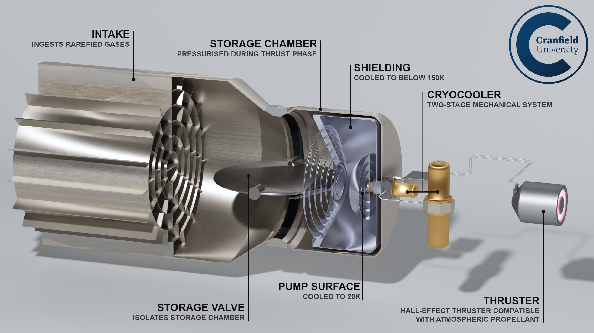
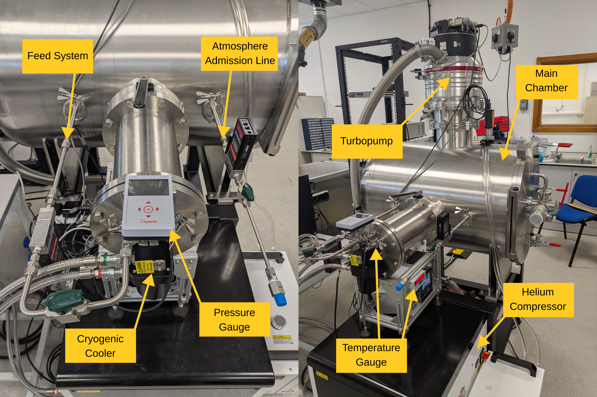

A novel active intake and storage device system for Atmosphere-Breathing Electric Propulsion
Very low Earth orbit (VLEO) offers sharper imaging, faster de-orbit and lower collision risk than conventional orbits — but the rarefied atmosphere at those altitudes causes drag that would normally end a mission early. Air-Breathing Electric Propulsion (ABEP) turns that problem into the solution: an intake collects and compresses ambient gas, feeding it to an electric thruster as an effectively infinite propellant supply, so the spacecraft never needs to carry its own.
Most ABEP concepts rely on purely passive intakes, which narrows the usable altitude window and pushes most of the engineering burden onto the thruster. CSPL's approach is the PHROST concept: Propellant Harvesting of Rarefied gases in Orbit for Supplying electric Thrusters

PHROST uses a cryopump to capture and store atmospheric gas on a cryogenically cooled surface before it is isolated and released to feed the thruster, operating in two completely seperate collection and thrust phases. This decoupling eases the demands on the rest of the propulsion system: the intake is no longer constrained by the thruster inlet conditions, and the thruster can draw on a controlled, pressurised supply, avoiding fluctuating mass flows.
A mechanical cryocooler, a common feature in space telescopes, chills the pump surface to around 20 K, while a storage valve isolates the pressurisation chamber during the thrust phase.
Of course, the trade-off to PHROST is the additional complexities associated with the valve and pump systems. CSPL aims to develop these subsystems to evaluate its feasibility

CSPL's current experimental campaign is characterising critical operational processes in the PHROST system such as collection efficiency, pressurisation times, cooling requirements, mass flow stability, and the relationships between them.
The PHROST setup consists of a GM Cryocooler, storage tank, inlet valve and feed system. Atmospheric mixtures are injected into the main chamber where it is collected as a solid on PHROST's pump surface. The cryopump is regenerated to produce the pressure required to feed a thruster and, using the same chamber, it is fed back through a thruster. This allows full collection/thrust cycles to be tested within the same facility.
The concept began with Cameron Leslie's MSc thesis in 2021, supervised by Prof. Stephen Hobbs, deriving a baseline system model from first principles. A UK Space Agency-funded study followed in 2021–22, defining candidate configurations and assessing space-based cryocooler technology. The project is now backed by an ESA co-funded PhD (February 2024 – January 2027), led by PhD researcher Cameron Leslie, developing the testbed and experimental campaign described above.
Meet the team →CSPL welcomes enquiries from prospective research students, industry partners and fellow academics working across electric and chemical propulsion.